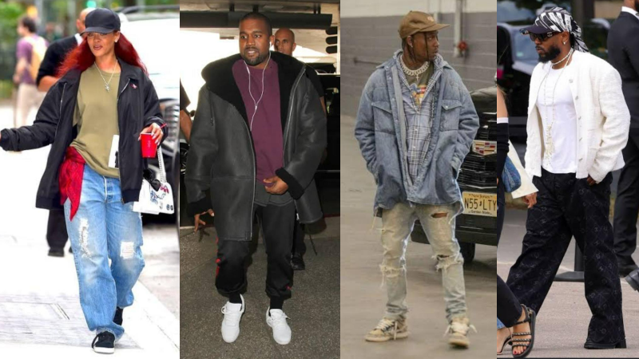

O que é Streetwear?
O streetwear é um estilo de moda casual que ganhou força entre os jovens urbanos a partir das décadas de 1980 e 1990. Inicialmente associado a diferentes subculturas, como o hip hop, o skate e o surfe, o estilo passou a representar não apenas uma forma de se vestir, mas também uma maneira de expressar identidade, criatividade e individualidade.
Com o passar dos anos, o que começou como uma tendência ligada às ruas conquistou espaço na indústria da moda e passou a influenciar grandes marcas e estilistas. Atualmente, o streetwear está presente em diferentes públicos e combina conforto, personalidade e elementos da cultura urbana.
As origens do Streetwear
O conceito de streetwear está diretamente relacionado ao crescimento das culturas urbanas durante as décadas de 1980 e 1990. A cena do hip hop de Nova York é frequentemente associada à popularização desse estilo, que surgiu como uma alternativa às normas tradicionais da moda.
A evolução do Streetwear para a alta moda
A aproximação entre streetwear e alta moda pode parecer contraditória. Afinal, o streetwear surgiu justamente como uma alternativa às normas tradicionais da indústria da moda. Entretanto, sua popularização fez com que seus elementos passassem a influenciar também grandes estilistas e marcas.
O que antes era associado principalmente às ruas passou a aparecer em coleções, lojas e eventos importantes da indústria da moda. Dessa forma, o streetwear deixou de ocupar apenas um espaço alternativo e passou a fazer parte do mercado da moda contemporânea.